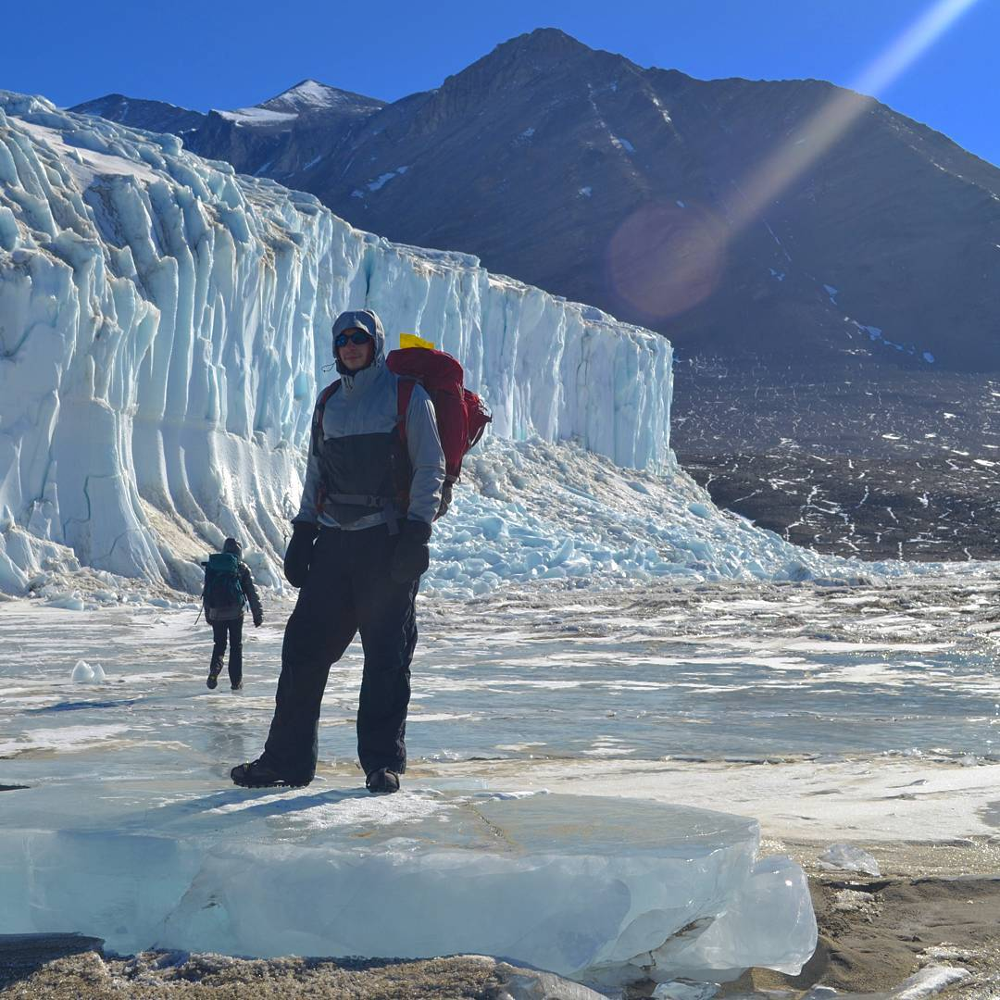
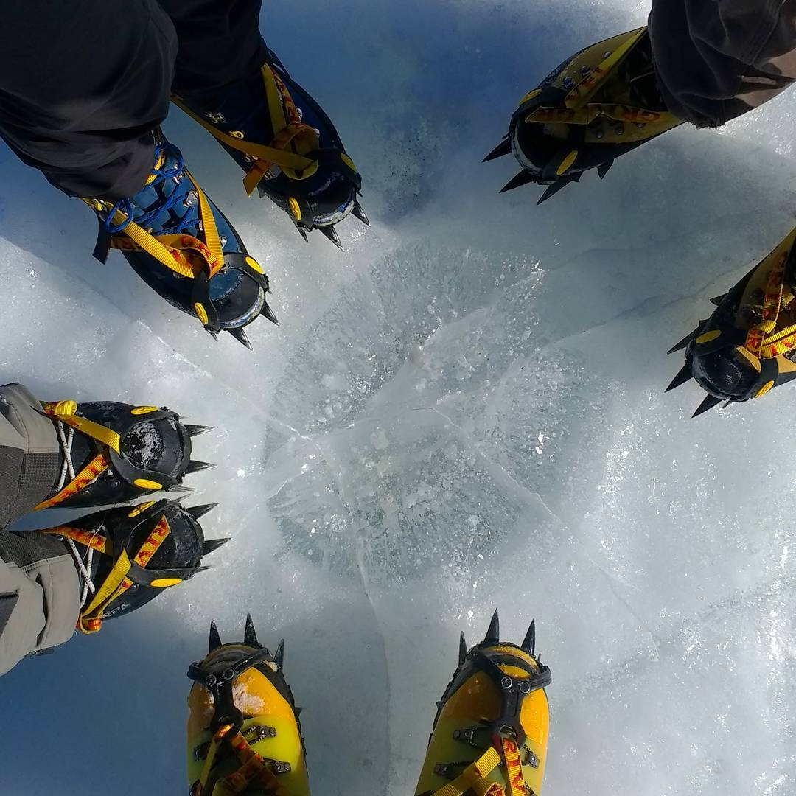
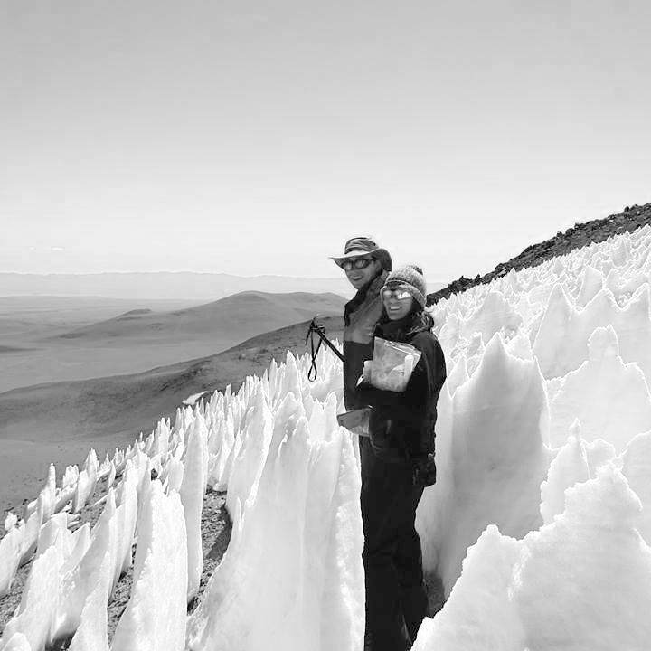
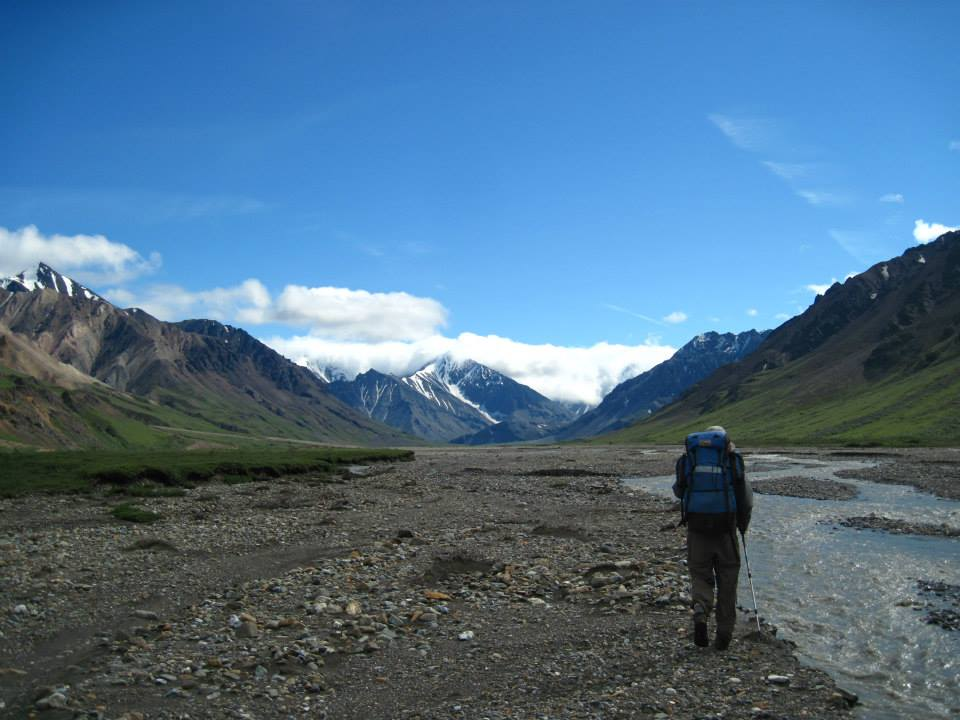
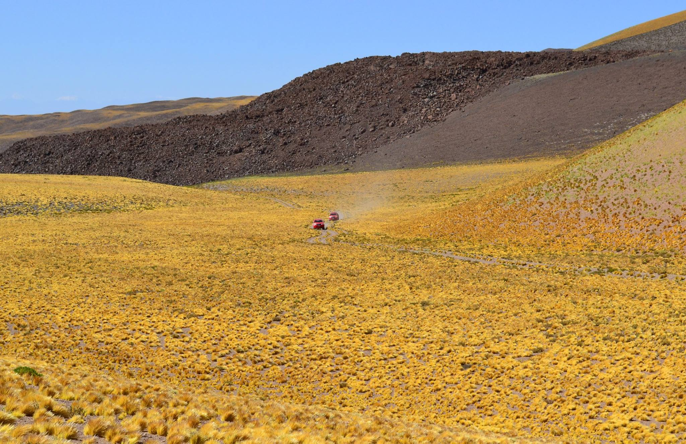

14+ Years
Cross-disciplinary computational research and software delivery.
Bioinformatics | Biostatistics | Expedition Science
Senior Scientist (Bioinformatics) building reproducible, production-grade omics workflows and statistical tools for real-world research teams.
Cross-disciplinary computational research and software delivery.
Built production R and R Shiny packages, including several commercialized tools.
Peer-reviewed contributions across microbiome and omics research.
What I Build
Designed and scaled cloud-native ONT metabarcoding workflows with 65+ amplicons on AWS, from prototype through production delivery.
Reduced QA and QC processing turnaround by 98 percent through automation and reproducible architecture.
Improved GSEA performance by about 1.5x while increasing statistical power by up to 20 percent.
Built multiple production R packages and Shiny tools that make high-dimensional data usable by non-computational stakeholders.
Trajectory
Leads production bioinformatics engineering for eDNA and metagenomics workflows, including cloud analytics and customer-facing outputs.
Delivered production analytical software, accelerated assay quality control workflows, and supported cross-functional translational analyses.
Published statistical methods and software for microbiome data, including the R + C++ package specificity.
Built sequencing pipelines for multi-terabyte ITS datasets and led team projects in ecological genomics.
Academic Background
University of Colorado Anschutz Medical Campus
Developed and published statistical methods and software for microbiome analysis, including the R and C++ package specificity.
University of Hawaii at Manoa
Built multi-terabyte sequencing pipelines and applied spatial and machine learning approaches to ecological genomics.
University of Colorado Boulder
Completed doctoral research in microbial ecology, biogeography, and model-driven analysis of extreme and glacial ecosystems.
University of Colorado Anschutz Medical Campus
Formal training in compliant handling of sensitive clinical data for analysis workflows and research operations.
University of Colorado Boulder
Built foundational training in molecular biology and experimental science that informs downstream computational work.
Expedition Work





Publication Record
This list is generated from data/publications.bib. Edit that file to update publications.
Contact and Documents